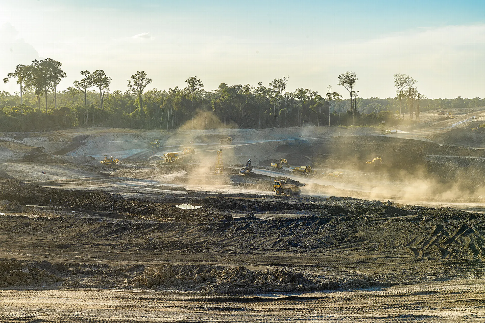
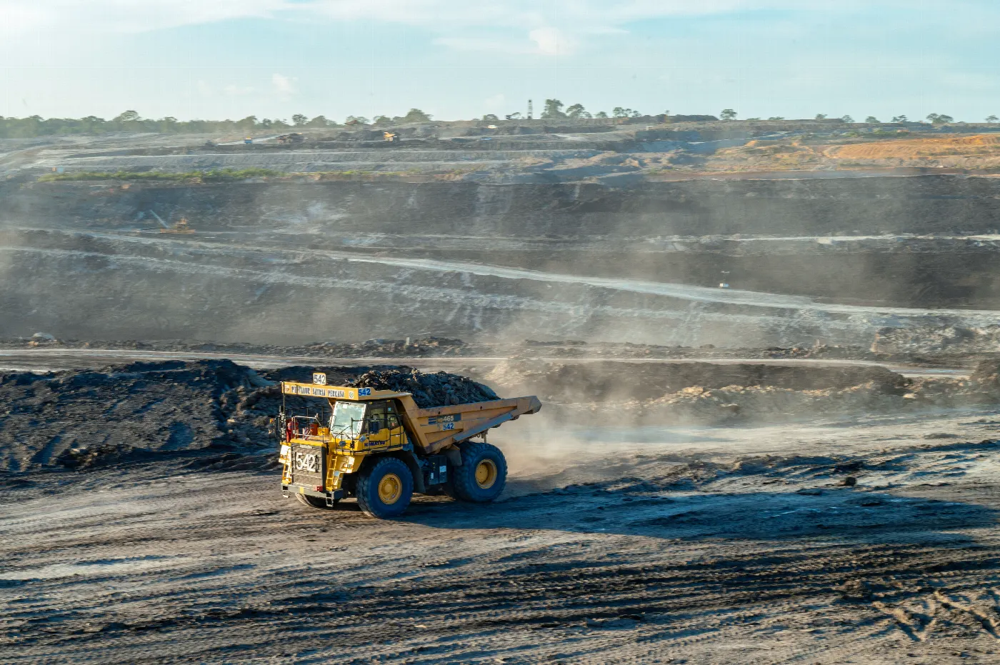
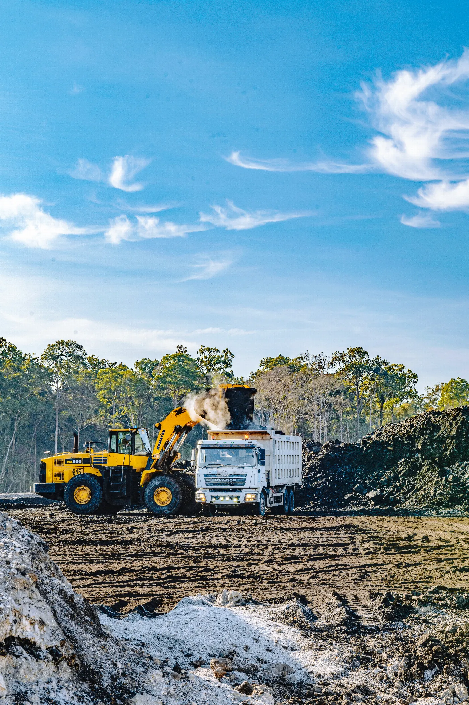
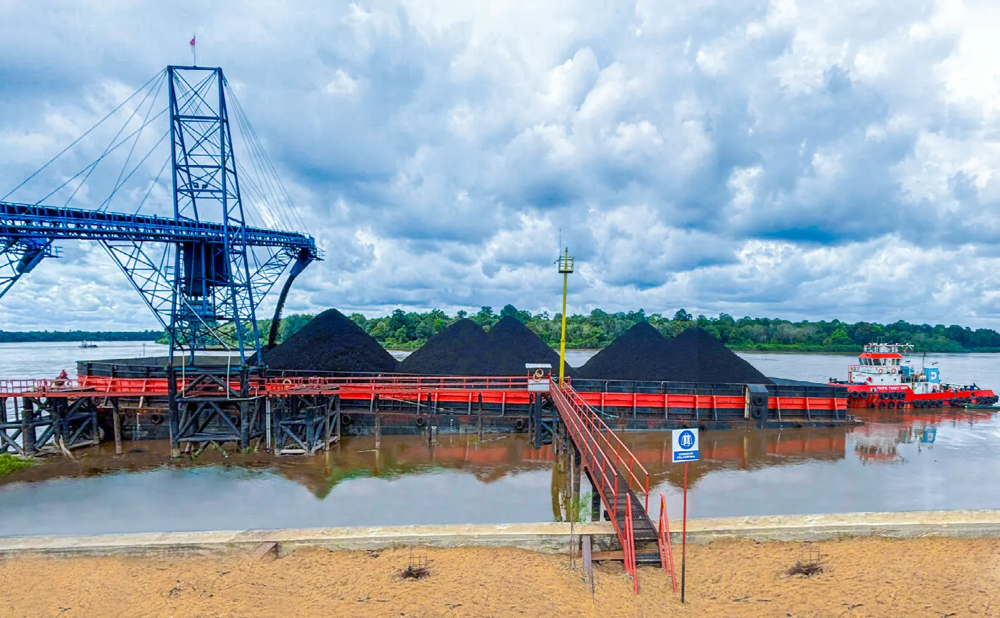
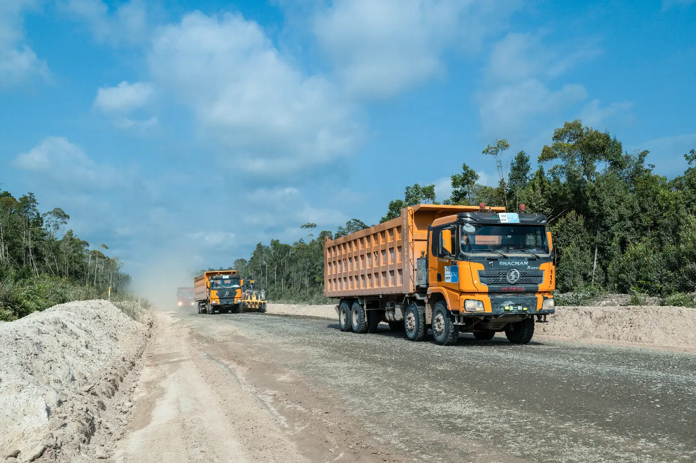
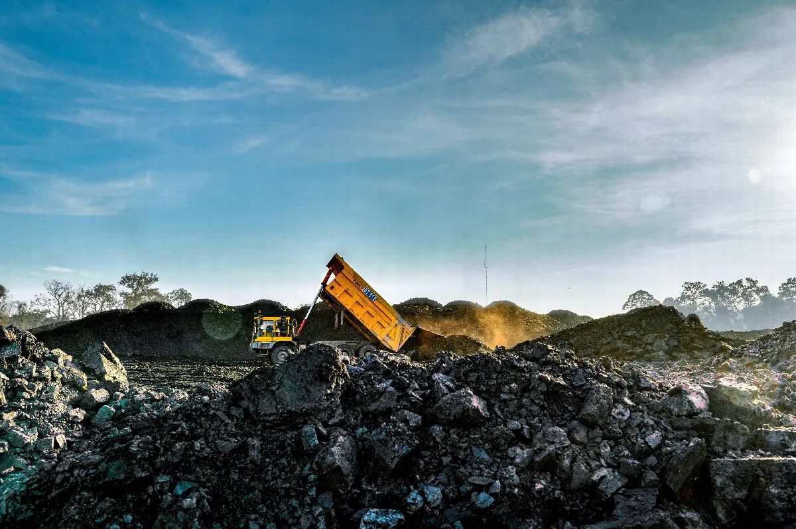

Bidang usahaBusiness areas
Pekerjaan yang dimulai dari lapangan.Work that starts on the ground.
Kegiatan usaha PKPK mencakup pertambangan batubara, alat berat dan dukungan operasi, penyiapan lahan, serta konstruksi untuk lingkungan industri.PKPK's business activities cover coal mining, equipment and operational support, land preparation, and construction for industrial environments.

01 / PertambanganMining
Batubara untuk kebutuhan dalam dan luar negeri.Coal for local and international needs.
PKPK mengembangkan kegiatan pertambangan batubara untuk memenuhi permintaan di Indonesia dan pasar luar negeri.PKPK is expanding its activities in coal mining to serve demand in Indonesia and overseas markets.
Usaha tambang menjadi inti pengalaman operasional perusahaan di Kalimantan dan terhubung langsung dengan kemampuan alat berat serta penyiapan lahan.The mining business sits at the centre of the company's operational experience in Kalimantan and connects directly with its equipment and land-preparation capabilities.




02 / Alat beratEquipment
Alat berat dengan dukungan operasi.Equipment backed by operational support.
PKPK menyewakan alat berat serta menyediakan dukungan operasi, perawatan, dan suku cadang untuk kendaraan ringan dan berat.PKPK leases equipment and provides operational support, maintenance, and spare parts for light and heavy vehicles.
- Sektor
- Operating sectors
- Pertambangan, perkebunan, serta minyak dan gasMining, plantations, and oil and gas
- Cakupan dukungan
- Support scope
- Operasi, perawatan, dan suplai suku cadangOperations, maintenance, and spare-parts supply
- Jenis armada
- Equipment range
- Kendaraan ringan dan beratLight and heavy vehicles
03 / Penyiapan lahanLand preparation
Menyiapkan lokasi sebelum pekerjaan dimulai.Preparing the site before work begins.
PKPK memiliki pengalaman luas dalam penyiapan lahan, dengan area operasi terbesar tersebar di Kalimantan.PKPK states that it has extensive experience in land-preparation work, with its largest operating areas located across Kalimantan.

04 / KonstruksiConstruction
Dari perencanaan sampai perawatan.From planning through maintenance.
Perusahaan lokal dan nasional mempercayakan PKPK pada pekerjaan perencanaan, desain, fabrikasi, instalasi, pengujian, dukungan material, tenaga kerja, dan perawatan.Local and national companies have assigned PKPK work covering planning, design, fabrication, installation, testing, material support, labour services, and maintenance.

- 01
Pipa minyak dan gasOil and gas pipelines
Pemasangan dan perawatan jaringan pipa migas.Pipeline installation and maintenance for oil and gas networks.
- 02
Mekanikal dan elektrikalMechanical and electrical work
Instalasi mesin, sistem kelistrikan, dan instrumentasi.Installation of machinery, electrical systems, and instrumentation.
- 03
Fasilitas produksiProduction facilities
Instalasi peralatan produksi dan fasilitas pendukung.Installation of production equipment and supporting facilities.
- 04
Bangunan dan arsitekturBuildings and architecture
Konstruksi gedung dan pekerjaan arsitektur.Building construction and architectural work.
- 05
Struktur bajaSteel structures
Struktur dan penyangga baja untuk lingkungan migas darat dan lepas pantai.Steel structures and supports for onshore and offshore oil and gas environments.
- 06
Sipil dan pekerjaan tanahCivil and earthworks
Konstruksi sipil dan pekerjaan tanah untuk lokasi operasi.Civil construction and earthworks for operational sites.
Permintaan proyekProject enquiries